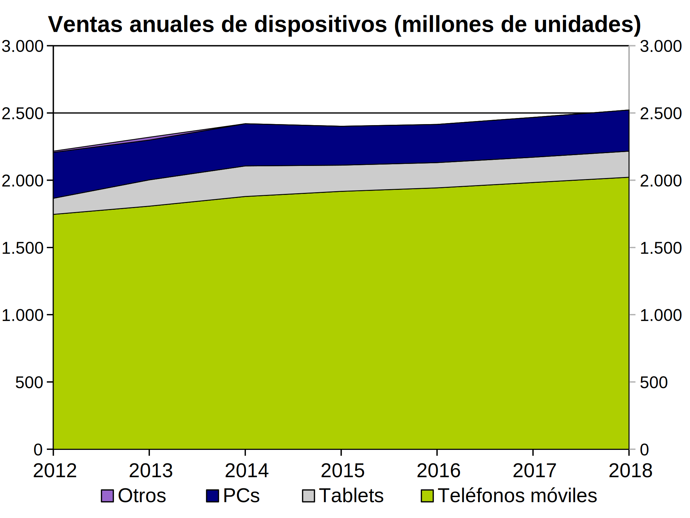
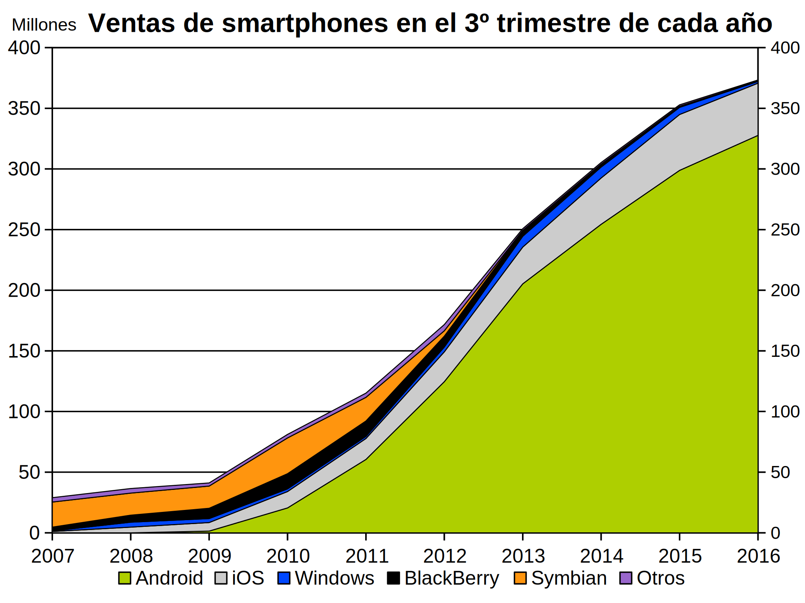
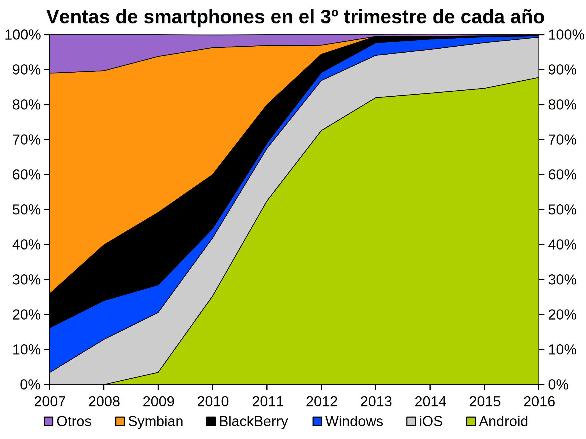
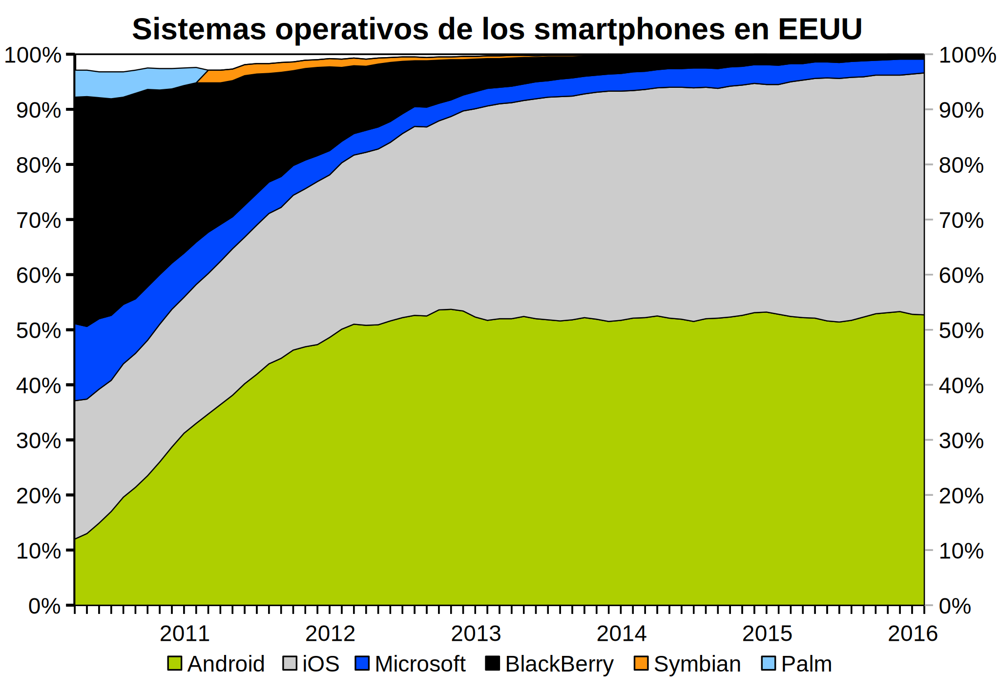
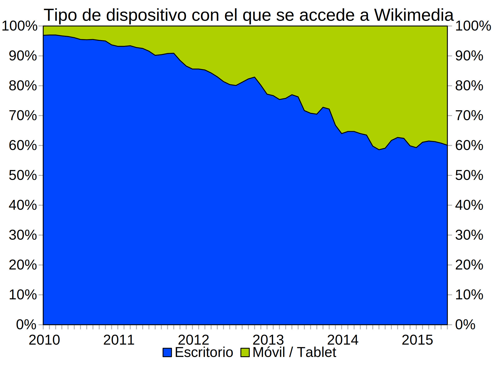
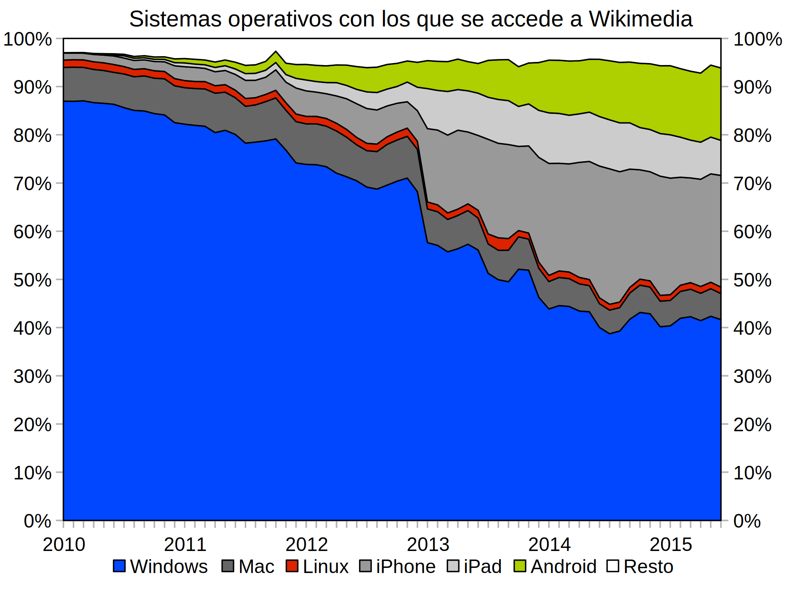

Si los años 90 y 2000 fueron la edad de oro del PC, en la segunda década del siglo XX nuevos dispositivos amenazan su supremacía: sobre todo los smartphones, pero también los tablets. En esta lección se ilustra la transformación de la informática que está ocurriendo en los últimos años.
Nota: Las gráficas de este apartado se basan en datos publicados en notas de prensa por la consultora Gartner.
La gráfica siguiente muestra las ventas mundiales de los distintos tipos de dispositivos (teléfonos móviles, tablets, PCs y otros) entre 2012 y 2015 y las previsiones entre 2016 y 2018. Hay que tener en cuenta que ya en 2013 la mitad de los teléfonos móviles vendidos fueron smartphones.

El sistema operativo más utilizado en los smartphones es Android. La gráficas siguientes muestran el número de smartphones vendidos en el tercer trimestre de cada año, agrupados por sistema operativo.
 
Nota: Las gráficas de este apartado se basan en datos publicados en notas de prensa por la consultora comScore.
EEUU es un mercado algo distinto al del resto del mundo: aunque Android es el sistema operativo más utilizado, la diferencia respecto al uso de iOS es pequeña.

La expansión de los dispositivos móviles se refleja en las estadísticas de acceso a Internet. Debido a que este tipo de estadísticas presenta inevitablemente sesgos de muestreo, más que en los valores concretos es conveniente fijarse en las tendencias.
Las gráficas siguientes muestran el porcentaje de visitas a sitios según el tipo de dispositivo:
Nota: Las gráficas de este apartado se basan en datos publicados en los informes de análisis de tráfico de Wikimedia, es decir, se refieren únicamente a las visitas recibidas por sitios vinculados a Wikimedia (Wikipedia, WikiBooks, WikiNews, etc). Por motivos que desconozco, Wikimedia incluye parte de las visitas desde Android, iPhone o iPad como sistemas de escritorio, por lo que las gráficas no coinciden.
 